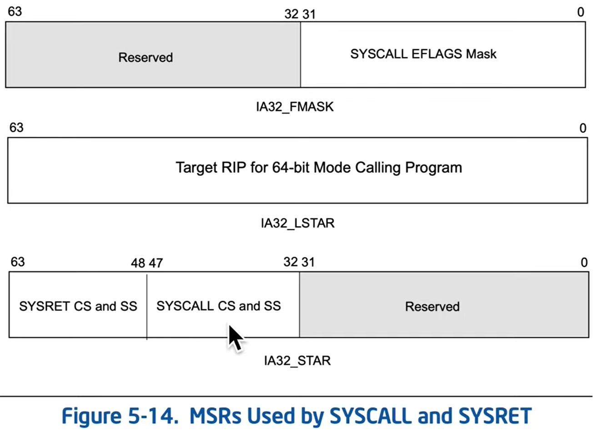

- Saves the RIP of the address after SYSCALL into RCX.
- Changes RIP to the value stored in IA32_LSTAR MSR (0xC0000082)
- Save RFLAGS into R11
- Mask clear each bit of RFLAGS against IA32_FMASK MSR (0xC0000084):
- Every bit that is set to 1 in the MSR, will clear any bit that is set to 1 in the RFLAGS.
- effectively RFLAGS &= ~(IA32_FMASK) ~() being invert
- Loads CS with value stored in IA32_STAR MSR (0xC0000081) bits [47:32] and set SS = (CS + 8) - the value loaded is a segment selector
- Doesn't save RSP! Either kernel or userspace SYSCALL handler is responsible for that.
- SYSCALL Arguments are not defined at the x86 level, its up to each OS.

The segment registers are 16-bit value treated as segment selectors with a hidden part: